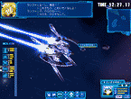

|
  |
|||
| ●特徴 |
| 紋章機３番機。大型レーダー搭載の紋章機。 遠隔コントロールプラズマ攻撃ユニット「フライヤー」により遠距離の攻撃が可能である。ミントの持つ超能力的な力ゆえに操作できるもののようである。どのような原理で遠隔操作できているのかは謎に包まれている。まさにロストテクノロジーなのだろう。 パイロットの気力が充実していると、この「フライヤー」を大量に操作することで広範囲の攻撃が可能になる。通称「フライヤーダンス」。 |
© BROCCOLI
|
|||||||||||
|
© BROCCOLI |
|||||||||||